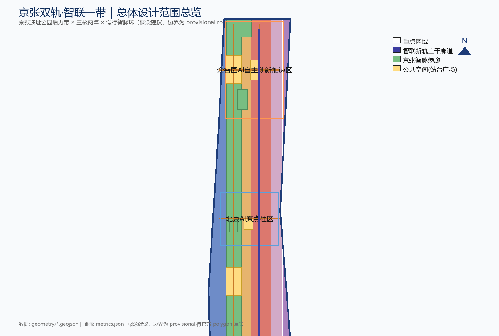
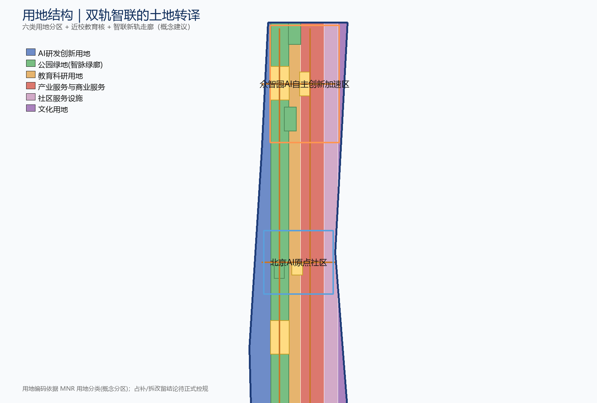
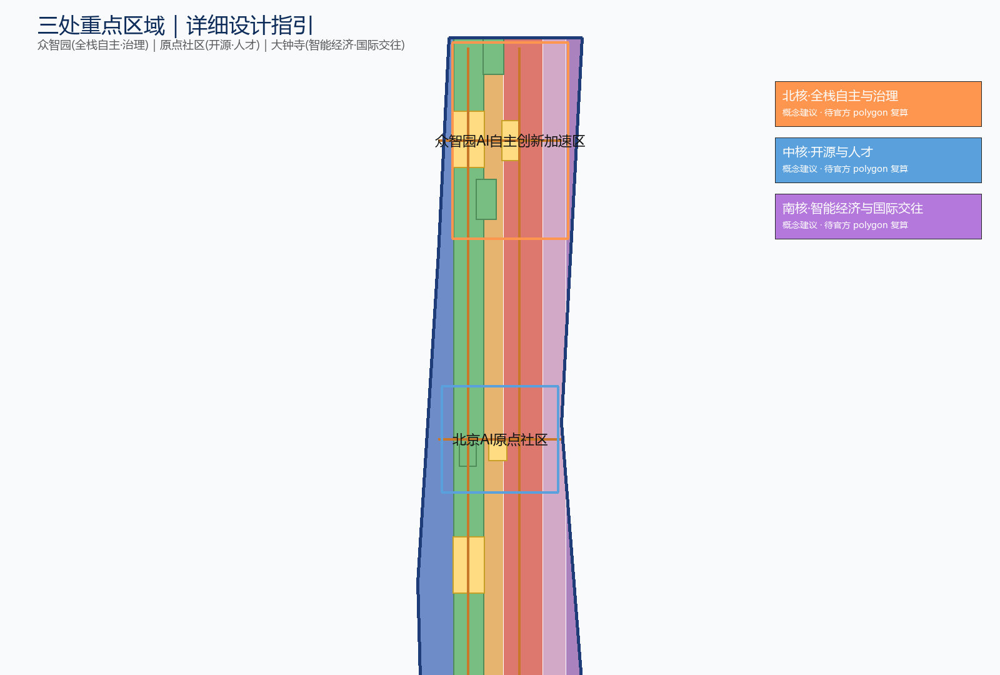
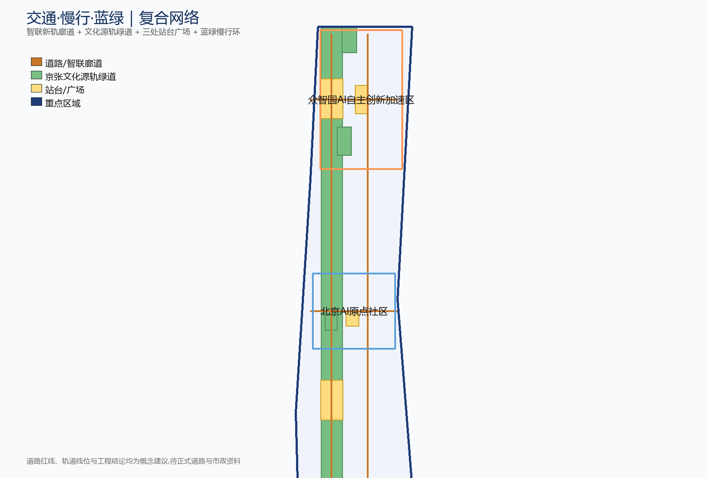
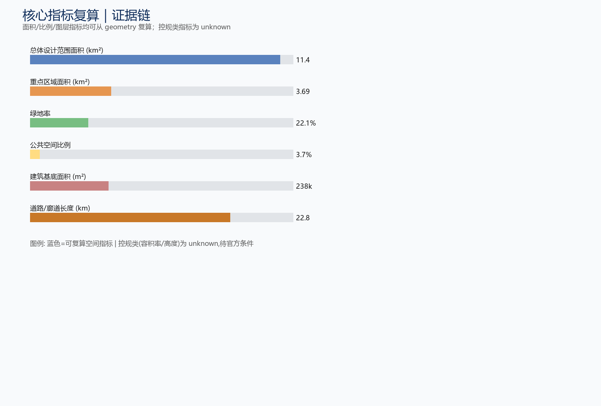

京张问道带·双轨问道——百年京张AI创新带总体概念设计
把京张那条已经停下来的老铁轨，和中关村这条还在自我追问的算法走廊并排铺成两条道——一条记着'中国人把路打通'那句话，一条低头问着'下一步路自己怎么走'。我们不立纪念塔，只在南端立一面会翻身成问号的问题墙，让城市每年问市民一句，再转过身，继续修路。
京张问道带·双轨问道——百年京张AI创新带总体概念设计
设计依据与资料清单
立春清早沿京张老线走一段：银杏嫩叶贴着碎石子，钢轨被踩得发亮——一百多年前是火车碾过，现在是大爷顺着道轨慢跑，每过一根旧里程桩掌心拍一下，像跟老朋友打招呼。这就是本方案要处理的对象：一段已经停下来的铁路，和一段正在问下去的城市。我们不把它改成又一个公园背景板，而是让它在算法时代重新被路过。
本方案以北京市规划和自然资源委员会海淀分局发布的《百年京张AI创新带城市设计国际方案征集资格预审公告》为第一依据，并以 brief/site-package/ 中经维护者登记的临时边界、重点区域、枚举、指标和来源清单为机器可读依据 来源 标准。主名定为「京张问道带」（英文 The Dao Belt · Twin-Track Quest），副题为"一条会自我纠错的创新路——从双轨到问道"。所有空间落地建议均为"概念建议/待正式控规确认"，不替代法定规划。
有一句历史话先说清楚：京张铁路（1909 通车）是中国人自主主持修建的第一条干线铁路，但不是中国第一条运营铁路——上海吴淞铁路（1876）更早 来源。詹天佑是主持总工程师，中外工程师与数千工人一起修成，青龙桥"人字"折线是关键工程决策之一。所以本方案不把 1909 说成 AI 前传、不把詹天佑说成一个人闷头画图；"道"指向的是"中国人把路打通"这件事，不是技术神话。
资料怎么用要写白话：正式可用资料 7 条、背景资料 1 条、仅供草拟 1 条；"只后台看一眼"或"仅供草拟"的资料不会偷偷升级成法定边界、正式控规、评分依据或政府承诺 来源。agent_fact_pack.md 只是阅读导航，不是新权威，事实判断仍回原始材料 来源。官方 SITE_BOUNDARY 和三处 KEY_AREA 未到时用 provisional_boundaries.geojson 临时顶上，几何都标 provisional_constraint、official_boundary=false——只作生成、自检和画图用，不当红线、审批依据或精确面积结论 深度。

边界和面积的事，可以回到总体范围图层自己核对 空间数据 指标；三处重点区是另一张图层、另一个数 空间数据 指标。正文里所有的空间结构、场景、项目和指标，都按"可以讨论、可以复核、可以等官方边界到位再重算"的方式写，谁也别一锤定音。
三层范围工作框架
公告分了三层范围，对应三种大小的"问法"：统筹研究范围（约 43.6 平方公里）回答 AI 产业往哪儿长、未来城市长成什么样；总体设计范围（约 11.4 平方公里遗址公园周边 1—2 公里）把更新框架、产业空间、交通市政支撑和城市风貌管住；重点区域范围（约 368.4 公顷三处详细设计地区）把功能业态、建筑规模、拆改留、公共空间连通和交通组织说细 来源。三层在 compliance_matrix.json 里逐条对上，保证公告 1.3、1.4、1.5 和 agent.1–agent.6 每项必选任务都有章节、图层、指标、图纸和 HTML 证据。
深度由 深度 与 深度 约束，空间证据以 空间数据 与 空间数据 为准——三处重点片区是问道带的三根桩。三层不是三套互不相干的图纸：统筹研究决定"问道"故事和产业链方向，总体设计把判断落到更新项目和设施支撑上，重点区域验证具体地块能否落地。上头想清楚、中间铺得开、脚下踩得稳。

本方案总体概念叫"双轨问道"：把京张遗址公园从"绿背景"翻过来当"城市主街"，由两条并排轨道承载——道轨（heritage origin track，物理铁轨遗产，记着火车头旧事，给公共空间当骨架）和光轨（light track，LED 与触控地屏排成的"数据光廊"，跑算法、数据和场景）。两条道平行不打架、各行其是，不画新红线。一轨就是这条双轨主轴；三坊（刻意用"坊"避同质"核"）对应任务书三处重点片区但重新起名；两翼是影问翼和轨光翼；一问是南端那面问题墙。整体记作"一轨·三坊·两翼·一问"。
| 层级 | 设计问题 | 方案回答 | 数据落点 |
|---|---|---|---|
| 统筹研究范围 | AI 产业生态与未来城市形态如何组织 | 以"道·问道·出道"三段立意组织创新链，可证性为治理底线 | compliance_matrix.json、standard_matrix.json |
| 总体设计范围 | 产业空间、更新、交通、风貌如何落图 | 一轨双轨主街 + 用地、建筑、道路、绿地、公共空间、分期图层一起表达 | 空间数据、空间数据 |
| 重点区域范围 | 三处片区如何达到详细设计深度 | 北·原点坊、中·聚场坊、南·出道坊分别给定位、空间动作、AI 场景和实施依赖 | 空间数据、空间数据、空间数据 |
统筹研究范围产业与未来城市研究
下午两点的五道口，自行车铃叮叮当当响成一片，像城市的心跳。拐进"聚场坊"画风忽转——像从街市走进一个还住着人的院子：三面更新老红砖楼一面临公园，树荫厚三度。统筹研究范围要替这一带回答的是：怎么把"街市和院子还在、人也在"的状态和世界级 AI 创新生态接上，又不冲平它。
我们不再沿用"智联一带"那个旧叫法，主名定为「京张问道带」（英文 The Dao Belt），刻意避开 Silk Road、Corridor 这类听腻的词，把"问道"当文化主线、"可证性"当治理底线 标准。立意三段讲给街坊：道——京张铁路（1909）是中国人自主主持修建的第一条干线，"中国人把路打通"就是「道」；问道——中关村是几十年来反复问"能不能自己做"的地方，就是「问道」；出道——AI 时代在这里再问"下一步自己怎么走"并把能复核的答案摆出来，就是「出道」。两条道跑道和问道，文化线是"问道"，治线是"可证性"。
三大定位、五大功能和三坊两翼按下表对上 来源：百年京张文化带落在道轨与文化叙事 N1–N4；都市 AI 生活体验带落在光轨与轨光翼的公共算力—场景体验；AI 融合创新带落在三坊创新链。五大功能分别落原点坊（全栈自主创新体系 + 技术流水台 PSR）、聚场坊（世界级 AI 创新生态 + 口述史收音站 CVM）、出道坊（智能原生新业态 + 国际传播）、影问翼（AI+场景支一招 + 市民点单台 CACS）、轨光翼（智能化 AI 活力城市 + 排号调解处 CDSA）和三院治理体系（AI 治理全球话语权）。
| 全球案例 | 核心机制 | 对京张可借鉴的点 + 清权边界 |
|---|---|---|
| 伦敦 King's Cross | 工业铁路遗产更新为知识经济街区，运河公共空间为骨架 | 道轨可借"以铁路遗存当公共主街"而非绿背景；资本运营另走属地独立流程，不绑伦敦业主 |
| 多伦多 Quayside / Waterfront | 智慧城区与数据治理实验场，曾因隐私争议重置 | 技术流水台借其"数据治理先于场景"教训；只借机制，不引已终止的 Sidewalk Labs 合作 |
| 苏黎世 Zürich West | 旧工业区更新为创意与科技混合街区，保留工业肌理 | 三坊保留低效产业肌理、导入轻量创意业态的方向 |
| 巴塞罗那 22@ | 老工业知识密集更新，混合用地 + 立体分层 | 出道坊智能原生新业态可引混合用地与立体分层；借机制不背书加泰政策 |
| 首尔 DMC | 数字内容产业集群与媒体文创园区 | 影问翼可借北影"科技与影像共同塑造中国现代想象力"；不引 DMC 财政承诺 |
| 雄安（公开讨论数字孪生） | 数字孪生城市与公共数据治理公开讨论 | 轨光翼公共算力可借"数据可被复核"方向；只引公开讨论，不编新区落地结论 |
| 深圳湾科技生态园 | 研发、孵化、居住、生态一体化的产业园区 | 原点坊可借花园型全栈自主街区与绿色测试场，机制借鉴不照搬 |
| Silicon Valley / Stanford | 大学—产业—资本正反馈与自由知识流动 | 聚场坊营造开源、低门槛、高流动人才氛围，机制借鉴非地理复制 |
这些案例只用来抠机制，不替园区现状背书 深度。未来城市形态研究回答 AI 怎么改变工作、生活、社交、学习、交通和公共服务，再落实成可定位的功能区、节点、廊道和场景，把产业战略指标、AI 创新指数、人才密度、空间供给和 AI 垂直应用重点区域写进指标，标清哪个官方、哪个设计建议、哪个要等 来源。方案同时惦记与北纬社区、未来科学城、怀柔科学城、经开区及京津冀的创新协同，把"问道带"当区域创新网络在文化—人才—场景上的接口。
总体设计范围城市更新与控规深度城市设计
总体设计范围要达到控制性详细规划的城市设计深度。京张遗址带是唯一能同时连上北五环、五道口、清华东路西口和大钟寺站的线状公共资源。我们提出"一轨·三坊·两翼·一问"的总体空间结构：一轨是京张遗址公园双轨主街（道轨+光轨并排各讲各的），三坊按北中南分工，两翼沿东西展开，一问是南端问题墙收尾 深度 空间数据。把这条带当"会答问题的小街"而非"绿背景"，更能经济地缝合城市肌理，让创新资源顺着"问道"线索聚起来。
用地按国土空间规划的公开分类走：沿遗址公园两侧留公园绿地和开敞空间当绿廊 空间数据；临道轨和站点摆 AI 研发创新用地与产业服务商业用地，分列光轨走廊两侧 空间数据、空间数据；社区服务和配套用地沿居住片区摆保住职住平衡 空间数据。用地完整性依据 标准，深度由 深度 校核。
更新走"识别低效空间—列项目清单—分期实施"，分清保留、改造、更新、新建和待确认，方法上"增量服务轻点一下、存量改造激活、公共空间先行" 深度 空间数据。容积率、建筑高度、建筑密度、退线、道路红线和设施标准因官方控规未到位，一律写"待正式控规条件确认"，不让 AI 凭空报个数糊弄评审 指标 标准。开发强度和高度只给方向：靠道轨高一点、靠公园低一些、文化界面限高、屋顶体量顺着双轨线形走，数字等官方条件到场由专业团队复算 深度 深度。先把"规矩"立好，把"数字"留白。
重点区域详细设计
三处重点片区按"北·原点坊—中·聚场坊—南·出道坊"分工，刻意用"坊"字避同质"核"，凑成一条完整的"出道"链：原点坊接全栈自主和可证性治理，聚场坊接开源协同和人才转化，出道坊接智能经济和国际传播 来源 标准。
| 重点片区（坊） | 设计定位 | 空间动作 | AI 产业与运营场景 | 证据引用 |
|---|---|---|---|---|
| 北·原点坊（Origin Hall）@众智园+清华园火车站遗址段 | 全栈自主创新与安全治理 + 可证性之都 | 强化清河界面、把"标准/安全/评测"翻成可参观、可预约、可监管的绿色展示场，设技术流水台（PSR：给每个 AI 场景登记一张"用什么型号、一段复跑配方指纹、用了谁的数据"的说明牌，街坊像对菜市场价签那样来对账） | 模型卡登记、复现脚本哈希托管、清权清单公示、第三方志愿复核 | 空间数据、深度 |
| 中·聚场坊（Convergence Yard）@AI 原点社区+五道口 | 开源协同 + 人才转化 + 口述史收音站 | 校区—园区—街区慢行缝合，补成果发布、人才服务、居住生活和开源协作空间，设口述史收音站（CVM：老工程师老居民的口述归档，像把胡同故事存进冰箱，想的时候能拿出来重温） | 开源社区、成果发布、人才特区服务、近校孵化、口述史向量索引 | 空间数据、来源 |
| 南·出道坊（Frontier Gate）@大钟寺 | 智能原生经济 + 国际传播 + 资本要素会场 | 大钟寺站四象限步行连通、商业服务和重点企业公共环境更新，设问题墙/Quest Gate | 智能体与智能终端展示、数据要素会客厅、国际路演、问题墙年度征集 | 空间数据、指标 |
三坊名第一次出现时各给一句胡同注脚：原点坊在清河畔火车头院一带（北端起点那段老站房），聚场坊是五道口的会客厅（街市和院子还连着的中间段），出道坊在大钟寺出路口（南端出地铁口接城市的那段）。两翼同理：影问翼是北影影像加提问，气质上像一条"影问巷"；轨光翼是光轨灯亮起来的那一翼。

原点坊把"技术流水台"当核心：全栈自主创新最稀缺的不是算力，而是"说法能被外人复核"。我们要的不是又一个评测基地，而是让"说法"能被对账的小台子——每个登记的 AI 场景带模型卡 + 复现脚本哈希 + 清权清单，可被第三方志愿复核，京张因此被说成"AI 可证性之都" 深度。聚场坊要"校区—园区—街区缝合 + 收音站"：高校人才是 AI 人才最大水库，把围墙两侧打通一截，同时用收音站把开发者每周自愿提交的口述建向量索引、三院审定入库，让"问道"的集体记忆能被检索继承，而不是散在 PR 评论里烂掉。出道坊要"站一体化四象限步行 + 问题墙"：轨道站是国际人流入口，四象限被主干路割裂就接不起连续消费商务体验；问题墙不立纪念塔，只立一个对全市开放的年度问题，公众每年问一句，开发者用开源原型回应，是朝圣地标的反向版，也是问道周的心脏。
AI 创新生态、人才画像与 AI+ 场景
夏夜，五道口往南那段光轨爬到半空成了一条竖起来的河。廊顶映一行字："今夜此廊公共算力跑 3 项；功耗实时 72 瓦"，像水电表在跳。再往南廊收口成"星空廊"——LED 全灭只剩地脚灯，抬头竟见几颗星。头顶没 AI 脚下没推送，只有夜风穿过——城市像说"我也有闭眼的时候"。这段夜戏替本节写好大纲：方案替 AI 人才和企业搭空间需求画像，覆盖研发办公、开源协作、成果发布、企业服务、人才居住、社交学习、消费生活、运动休闲与国际交往 来源。五类用户画像如下：
| 用户画像 | 典型需求 | 空间响应 | 自检边界 |
|---|---|---|---|
| 问道开发者（开源/科研） | 模型卡登记、复现脚本托管、社区声誉、口述上报 | 原点坊技术流水台 + 聚场坊开源发布厅 + 夜间协作空间 | 不采集个人行为轨迹；口述与肖像不入开源标的需家属/本人授权 |
| 出道初创团队 | 低成本办公、算力入口、可证评测、产品试验场 | 原点坊共享测试场 + 轨光翼公共算力点 + 排号调解处 | 算力与数据服务另行授权；评测结果人工复核后方可公示 |
| 国际访客（头部企业/媒体） | 展示、商务、国际接待、问题墙参与 | 出道坊国际路演客厅 + 大钟寺站接驳 + 问题墙脱敏公示 | 企业标识与案例须清权；撤回按钮必须保留 |
| 周边居民 | 通勤、休闲、社区服务、低扰动更新、提问权 | 问道带慢行环 + 社区服务嵌入 + 夜间照明分级 + AI 暗夜段 | 不把居民画像用于商业推荐；暗夜段刻意无主动 AI |
| 高校师生 | 成果转化、跨校协作、口述贡献、日常慢行 | 校区—园区慢行缝合 + 成果转化驿站 + AI 教育体验点 | 校园数据与科研成果需授权；收音站入库须三院审定 |
任务书要不少于 10 张 AI 场景卡，下面这些都对得上"服务对象、空间位置、数据来源、隐私边界、人工复核机制、运营主体"六要素，并按可运营节点进图层与合规矩阵 标准。本方案刻意避开"智慧路灯/无人机巡检/AI 客服/人脸闸机"这类通用货，每一张都带隐私边界 + 人工复核 + 运营主体：
| 场景卡 | 空间载体 | 设计说明（含隐私边界 + 人工复核 + 运营主体） |
|---|---|---|
| 01 技术流水台 PSR | 原点坊 | 登记 AI 场景/模型的模型卡+复现脚本哈希+清权清单，第三方志愿复核；三院联合体运营 |
| 02 城市值班小报 FUSA | 问道带全域 | 各片区只报一句情况摘要不交换居民私事，像大院告示栏；阈值命中由人类调度员复核，不交换原始数据 |
| 03 排号调解处 CDSA | 轨光翼公共仲裁体 | 算力/数据/场地三方抢档期公开排号明面调解，像医院挂号；轨光翼运营方 |
| 04 口述史收音站 CVM | 聚场坊 | 公开口述史向量索引，三院审定入库；口述与肖像须本人/家属授权 |
| 05 市民点单台 CACS | 影问翼社区驿站 | 街坊把点子堆墙上机器先分堆人再排序，像居委会年终盘点；不采集个人画像仅聚合 |
| 06 朝圣路径生成 PPS | 问道带公共空间 | 按季节活动生成步行朝圣路径，可解释导视低侵入传感；不跟踪个人 |
| 07 事后说法本 ARA | 原点坊 | 对城市异常事件做事后脱敏复盘库，出岔子摆经过教训像茶馆说旧账；保护隐私 |
| 08 算力账单可见化 | 轨光翼公共展示 | 公共 AI 算力能耗/数据成本按街区/时段像水电公示，填没人占的空位 |
| 09 双轨并列受限问答（N2 纪事） | 五道口段光轨地屏 | 光轨地屏只答本场地历史与活动、拒绝超范围推理；聚场坊运营方 |
| 10 N1 光车投影鉴证 | 清华园站遗址段 | 夜间光轨投影"光车"艺术装置明示非复刻，铭牌列可考工程师与工种+史料截止年 |
三个产业测试验证场景均概念建议、非已批运营 来源：原点坊"技术流水台复现脚本志愿复核场"（面向登记模型公开基准+授权语料，复现经人工复核才发布，三院联合体运营）；轨光翼"算力—数据—场景排号调解试运行"（三方冲突仲裁日历，轨光翼公共仲裁体）；影问翼"市民点单 AI 聚类评审试验"（市民公开提交需求做 AI 聚类+人工排序，社区驿站联合体）。AI 治理守四条：数据最小化、公开来源、可解释、人工复核；城市智能体能帮识别慢行断点、公共空间热力、设施维护、企业服务和活动安全风险，但不替规划审批、不输出未授权个人画像、不假装拿到官方实施承诺 深度。
用地、建筑规模与拆改留方案
用地按国土空间调查、规划、用途管制分类等公开标准表达，凑成完整闭合无缝的用地分区 标准。用地分类与建筑基底证据是 空间数据 与 空间数据，规模复核用 指标。建筑方案分清保留、改造、更新、新建或待确认，写清基底、功能、规模、风貌、屋顶、体量和高度控制的建议层级 深度。
因为现状建筑、权属、控规和工程条件都缺，方案只给方法和待校准清单，不编拆改留结论。原则：京张遗址、文物与历史建筑一律保留为前提，只做环境和功能的"轻点一下"；低效产业空间以改造激活为主；既无保留价值又挡公共空间连通的对象才记进"待确认"，且须等正式权属、控规和文保条件下来再动。高度、体量、界面、风貌由 深度 管，只给"靠道轨高一点、靠光轨低一些、文化界面限高、屋顶体量顺着双轨线形走"的概念方向。
建筑规模与强度指标须和 metrics.json 与图层对得上。总建筑规模、容积率、建筑高度、建筑密度、绿地率、退线和建筑控制线，凡官方条件缺的统一 status=unknown，并在 reason/assumptions 写清还差什么、当前假设、正式数据到位后怎么复算，绝不用固定数字制造精确感 标准。宁可说"不知道，等数据"，也不报个数糊过去。
交通、轨道、市政与公共服务设施
秋天傍晚，银杏落叶金黄一线埋住铁轨。光轨在天暗时渗出暖琥珀色，像地缝里渗出来的灯；两轨一旧一新隔草沟并肩。带状公园每段都有花架小节点和铁艺椅，遛弯老爷子歇脚看一眼电子窄屏："本段双轨带本周 AI 在岗 4 项（落叶清扫 / 夜景灯 / 人流疏导 / 紧急呼叫）；算力耗电 412 度，公园专项列支，明细可扫码"——像看水电表，看完起身牵狗。这段秋景替交通和市政都写好了注脚：方案要的是"道轨记着旧事、光轨照着眼前，两条道并排各讲各的"。
交通方案回应公告对轨道站点一体化、道路微循环、慢行断点、对外交通、停车、非机动车停放和绿色交通系统的要求，重点照顾北五环、跨环路节点、五道口、清华东路西口、大钟寺站和重点企业周边 来源。交通与市政深度由 深度 与 深度 约束，图层证据 空间数据。
"双轨问道"在交通层有具体所指：道轨是京张铁路廊道（含地铁 13 号线廊道）的物理轨道带，光轨是沿廊道布设的数据光廊（含慢行与创新服务）。在五道口（聚场坊门户）、清华东路西口（近校接驳）、大钟寺站（出道坊站一体化）和跨北五环节点（缝合遗址带）各设一个"双轨并列节点"，道轨物理遗产与光轨数据服务同站点并列、却不串流 空间数据。站点周边按"轨道优先、慢行优先"组织接驳和非机动车停放，道路微循环把被铁路和环路切碎的街区缝上，公交、骑行、步行和停车供给统一校核；道路红线、线形和桥隧工程列为待正式条件确认。

市政和公共服务覆盖 AI 产业服务、创新服务平台、人才生活服务、新型基础设施、分布式能源、端侧算力与传统市政的融合。分布式能源和端侧算力当"光轨"在市政上的落脚点，说清设施标准、空间布局、服务半径、运营模式和分期，但管线、能源、排水、防洪、消防等工程资料缺时全部列为正式深化前要补的条件 深度。公共服务分三类：人才服务（人才特区、居住与社交）、创新服务（孵化、发布、评测、路演、技术流水台）、生活服务（医疗、教育、法律、生活服务样板街），以轨道站点为服务半径的桩 来源。交通不是给车看的，是给人走的；电水管够，算力像水电表那样亮出来。
蓝绿空间、公共空间与城市风貌
蓝绿方案以双轨主街为骨架，把清河、小月河、周边高校、企业、社区的出行需求串起来，提出南北贯通、东西连通的步道、骑行道和绿色空间体系，成一条"问道慢行环" 深度 空间数据。环线串三坊两翼：北段沿清河界面接原点坊，中段穿问道带接聚场坊，南段沿小月河接出道坊；东西向用道路和公共空间把断点缝上。绿地和公共空间比例支撑日常交往、创新偶遇和户外测试 指标 指标 空间数据。
问道带的 AI 公共空间，定位是"道轨和光轨共用的一条主街"：保留钢轨、站台、里程碑当历史记忆，叠加可解释的 AI 导视、数据艺术装置和场景体验，形成东西缝合、南北贯通的空间策略 标准。在此基础上刻意造三处对照，用一段黑衬众人亮：其一，N2 双轨并列段——200 米历史铁轨 + 200 米光轨地屏平行不相交，光轨只答本场地历史与活动、拒绝超范围推理；其二，AI 熄灯段/暗夜对照段——刻意低能耗、无主动 AI、星空夜廊，当鉴证基线，让问道带不光有亮也有暗，公众借这段暗感知 AI 边界；其三，南端问题墙——公众提问、AI 自动脱敏后公示、保留撤回按钮，刻意不办闭幕。
三个 AI 朝圣地标都是概念建议：其一，清华园站 N1"光车"——夜间光轨投影通过的光车为艺术装置，明示非复刻，铭牌列可考工程师姓名与工种 + 史料截止年；其二，N3 中关村创想核"可更新活档案墙"——开发者每周提交授权口述、三院审定，北影做"科技与影像共同塑造中国现代想象力"的活档案；其三，南端"问题墙/Quest Gate"——反向地标，不立塔，立一个对全市开放的问题，公众每年问一句、开发者用开源原型回应，是问道周的心脏，也是和"智联塔/数字孪生塔"最大的岔口。三个地标都须满足文保、绿地、蓝线和交通安全约束，不涉桥隧或地下工程结论，不擅改企业建筑或权属 来源。
命名/IP（均为概念建议）：主名「京张问道带」（英文 The Dao Belt）；三坊 Origin Hall / Convergence Yard / Frontier Gate；两翼 Frame-Quest / Track-Light；IP「问号轨」Quest-Rail——直轨平滑弯成问号、形似青龙桥人字折角的几何提纯，作铺装纹样 + 导视标头 + 活动徽记三用。导视中英双语 + 历史层繁体注音（站名牌用 1909 汉字 + 注音字母），开源字体（思源），NFC + 机读 GeoJSON 点位 + 授权清单，盲文触图与离线语音导览 标准。城市风貌把京张铁路文化、中关村创新文化和 AI 创新文化揉一起，借清华园火车站、北影这些资源，给出基调、风貌、屋顶形态、体量、界面与公共艺术引导 深度。
文化叙事三段四节点（北→南）写成画面而非清单：N1 原点·1909 在清华园站遗址段——春日清早大爷沿道轨慢跑每过旧里程桩拍一下，矮石榴下长椅背钉黄铜刻京张年份；广场角站牌电子屏翻出"本坊 AI 在岗 2 项：晨跑心率监测 / 灌溉；算力耗电 183 度已存档可查"，像认真公示栏；阿姨扔进分类桶时感应灯绿一下算它说"谢谢"。N2 接驳·双轨并列 在五道口段——午后车铃叮叮成片，三面更新老红砖楼一面临公园；小学生挤在树底看开放终端，屏幕上是会动的呼吸图无推荐无优选；外宾拍铁牌（中英对照"AI 原点社区·聚场坊"，小字"本坊 AI 场景 7 项、30 日可复核"），台阶侧面阴刻填漆编号下雨不糊——城市把话压低声说一遍。N3 聚场·中关村创想核 在中关村—北影段——可更新活档案墙 + 北影像视。N4 出道·南端开放核 见下一节问道周 标准。
更新项目清单、实施政策与分期计划
实施方案列成一张能审查的更新项目清单，写清位置、类型、功能、责任主体、依赖条件、实施阶段、风险和评估指标 深度 空间数据：
| 项目编号 | 项目名称 | 类型 | 主要依赖 | 证据引用 |
|---|---|---|---|---|
| JZ-01 | 问道带慢行断点缝合与双轨并列节点 | 公共空间/交通 | 道路红线、桥下空间、交通组织复核 | 空间数据 |
| JZ-02 | 原点坊清河创新界面与技术流水台 | 蓝绿/可证性治理 | 河道蓝线、生态防洪、模型卡登记协议 | 空间数据 |
| JZ-03 | 聚场坊近校成果转化街与口述史收音站 | 城市更新/开源协同 | 校区边界、权属、首层业态、口述授权 | 空间数据 |
| JZ-04 | 出道坊大钟寺站四象限步行连通与问题墙 | 轨道一体化/反向地标 | 轨道站点、道路交叉口、市政管线 | 空间数据 |
| JZ-05 | 光轨可展装置试装与轨光翼公共算力点 | 新基建/公共算力 | 能源、算力、排号调解协议、运营主体 | 深度 |
| JZ-06 | 问道周年度活动公共路线与 AI 暗夜段 | 运营/品牌/反差 | 公共空间许可、活动安全、暗夜段低能耗协议 | 空间数据 |
政策建议覆盖城市更新统筹实施、空间供给、运营机制、产业服务、公共参与、数据治理和产权协同，原则"公共空间先行、轻量运营启动、专业条件后置"压低启动门槛。100 天成图期可用开放共创 Issue 模板 + 场景登记表单 + 共享仲裁日历开源起步；光轨以可展装置先试装，技术流水台和三院治理可先跑。实施分三期 深度：一期轻量运营 + 活动 + 平台（技术流水台登记表单、问道周活动、光轨可展试装、三院治理先跑）；二期双片区 + 对外传播 + 光轨可展试装（原点坊+聚场坊、问道周对外传播）；三期治理议程 + 长期知识库沉淀（出道坊+问题墙长期议程、收音站长期沉淀、排号调解处长期仲裁）。征集周期是提交成果的时间要求，与实施分期不同 空间数据。
对应 agent.6 的长期运营设计（均为概念建议）含四套机制 来源：一是年度活动体系——旗舰"京张问道周"（Dao Week，每年 10 月第二周，锚 1909 通车月，不闭幕，以采纳问题计成果）；季节配套"春影问季/夏轨光算力夜/秋问道周/冬问号轨闭门复盘"凑成节奏；二是开发者社区三院治理——技术院/文化院/公共院，任一可否决、重大需两院，贡献积分可记忆不可流通，代码 Apache-2.0、数据集 CC-BY-NC-SA、口述肖像不入开源标的需家属授权；三是场景开放运营机制——场景登记表单 + 技术流水台志愿复核 + 公共体验路线，把场景卡变成常态运营对象；四是国际传播与招引转化——以史实好奇心当钩子（京张=中国人自主主持修建第一条干线），投资走属地独立流程，传播与承诺界面隔开。机制不夸大政府承诺，不把设想写成已定 标准。
问道周的开幕戏在出道坊问题墙前演。十月第二周，北京刚冷风脆。没有剪彩、没有倒计时。那面比成年人高半头的灰混凝土长墙，正面嵌可翻转的小金属片，白面朝外；市民写完问题把片翻黑，远远看去墙上像长出会动的巨大问号。戴雷锋帽的大爷念"AI 能不能给我老伴看病时多提醒吃药"，再抽片写"能不能让换乘不绕路"，翻过去笑得很满意。墙根下糖炒栗子、烤红薯、修自行车和油印小伙，边印边送还热的"问号册"。背孩子的妈妈接过册子，孩子被烤红薯味拽走。男孩坐墙头矮坡吃糖葫芦，想一节课没想通的事，跑来写"为什么背了还是不会"，翻黑走了。问道周不闭幕开到下一年十月；墙背面可贴回应小纸条。电子屏循环一行："本年间被采纳问题条数——47 条。"外宾站屏前看了很久，也抽片写汉字"北京的墙会问"。这段即文化叙事的 N4 出道·南端开放核。
指标体系、面积复算与合规矩阵
指标体系至少包含总体设计范围面积、重点区域面积、绿地与公共空间比例、建筑基底、更新项目数量、AI 场景节点、慢行连通指标、产业空间指标、人才服务指标和自检状态。scripts/spatial_review.py 与 scripts/visual_review.py 的结果是 formal 自检的重要证据；指标复算遵循统一设计深度要求 深度。
关键指标设计含义说人话：总体范围面积约束空间怎么分、蓝绿能不能扛 指标 空间数据；绿地与公共空间比例撑住日常交往、创新偶遇和户外测试，复算引 指标、指标 空间数据；建筑基底面积反映更新体量级 指标；重点区域数量保证三处必选片区齐 指标。容积率这类管控指标因缺官方控规状态 unknown，待正式数据到位再复算 指标。

正式深化时把每个指标分三类：其一提交几何可直接复算的空间指标（边界面积、绿地比例、公共空间比例、建筑基底面积、分期面积 空间数据）；其二需官方控规或任务书附件支撑的管控指标（容积率、建筑高度、建筑密度、退线、道路红线、设施标准）；其三需运营或产业数据持续校准的绩效指标（可证性登记数、收音站条目数、问题墙采纳数、问道周参与度、暗夜段鉴证时长）。三类分别进 metrics.json、assumptions.json、compliance_matrix.json。合规矩阵是任务响应主控文件，每条公告与 agent_taskbook 任务都对到章节、图层、指标、图纸、HTML、来源、假设和自检项；漏覆盖公告 1.3、1.4、1.5 或 agent.1–agent.6 任一必选任务的，不得进 formal professional scoring。
风险、版权与合规说明
要求双语。 方案主文件用中文，通过 proposal.en.md 提供完整对照译文；A3/A0、HTML 与含文字图件也提供对应语言副本，并优先用推荐译法。v2 包缺任一必需译稿、语言映射或有效文件时，finalize 与 CI 会阻断提交。所有图片、图纸、图标、数据和代码资产在 sources.json 或 report/copyright_statement.md 中说明来源、许可与授权状态；HTML 页面不得加载远程脚本、远程地图瓦片、远程字体、iframe、表单或外部 API，不得跟踪评审者行为 来源。
风险与缺资料清单由风险深度项与场地包共同校核 深度 来源：official boundary、key area polygon、控规控制线、道路红线、地块权属、建筑现状、市政管线、文保范围与建设控制地带都缺官方几何，geometry/constraints.geojson 保持空集合免得用推算线冒充 official_constraint，缺口按 A-CONTROLS-001 登记 来源。凡缺官方控规、道路红线、权属、市政、消防或文保条件的结论都降级为待确认；完整专业核对保存在标准矩阵中。方案所有空间落地建议均为"概念建议/待正式控规确认"，不声称官方批准、审定控规、最终土地权属、最终建设规模或保证实施；AI agent 对事实、来源、版权、空间数据、指标与表达负责 标准。
可证性治理与隐私边界是本方案的核心风险控制：技术流水台只登记模型卡 + 复现脚本哈希 + 清权清单，不托管原始数据；城市值班小报只交换状态摘要向量，阈值命中由人类调度员复核；口述史收音站入库须三院审定且口述与肖像须本人/家属授权；问题墙 AI 自动脱敏后公示且保留撤回按钮。本方案所有 AI 原生机制都设有人工复核 + 运营主体 + 撤回机制，不存在"全自动不可复核"的单点。
差异化声明
本方案刻意避开"带/脉/脊/轴/环 + 三核两翼 + 12 卡 + 5 地标"这套被来回抄的模板，主打四条岔口：问道叙事替代智联口号（以"道·问道·出道"三段把京张与中关村升一句文化命题）；技术流水台作治理主线（让"说法"能被对账的小台子）；算力账单可见化填"钱从哪来花哪去"的空位；AI 暗夜段当反差点（用一段黑衬众人亮）。以"坊"避同质"核"、以"问道带"避同质"智联一带"、以"问题墙"作反向地标避同质"数字孪生塔"，让评委记住岔口而非又背一遍同一套模板。
最后替这座城说一句自白：这城市不替你回答，它把你的问题挂到墙上，然后转过身，继续修路。
参考资料
- brief/public-brief.md
- brief/site-package/design_brief.json
- brief/site-package/allowed_design_space.json
- brief/site-package/agent_taskbook.json
- brief/site-package/enums/
- brief/site-package/ranges/planning_limits.json
- data/processed/agent_fact_pack.md
- data/processed/project_scope_summary.csv
- data/processed/agent_task_requirements.csv
- data/processed/source_use_matrix.csv
- data/processed/missing_data_checklist.csv
- 完整机器索引：见
sources.json、metrics.json、compliance_matrix.json、standard_matrix.json与design_depth_matrix.json - 本节书目入口依据场地包登记，完整出处和许可见结构化来源清单 来源